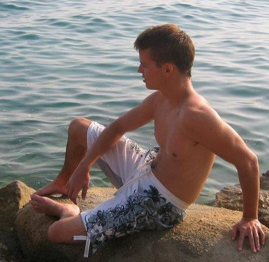
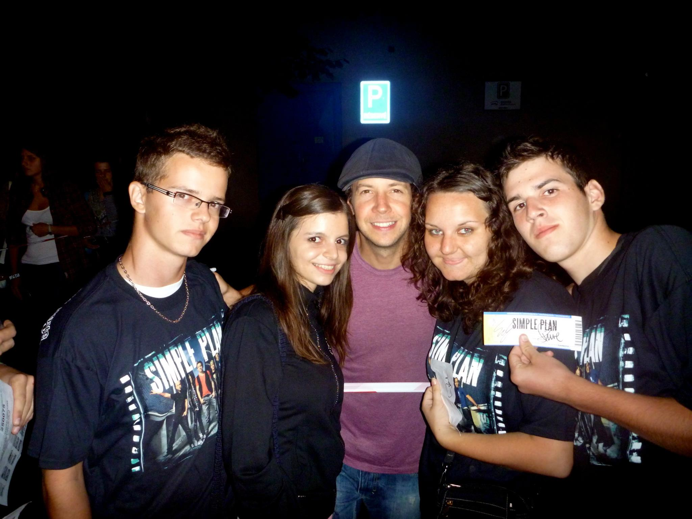

In my free time I usually do several activities, which "free my mind" from difficult tasks given to us in school.
I would divide these activities into few categories, like sport, music, socialising and so on.
Activities:
Sport In my nature I´m a sport type of a human being, because I enjoy rollerskating, playing hockey, badminton, ping-pong, tennis, pool, bowling, darts, calcetto, sometimes i work out and swim.

Music I love to play my favourite songs on my guitar. When I´m in the mood, I also sing. Occasionally I jam with my friends, who also have different types of musical instruments.

Socialising I´m social type of a person, friends are part of my life and that´s why I spend my time with them. We often hang out together and do lots of things like I´ve mentioned before - roller-skating, playing board games, computer games and we go out to our favourite places.